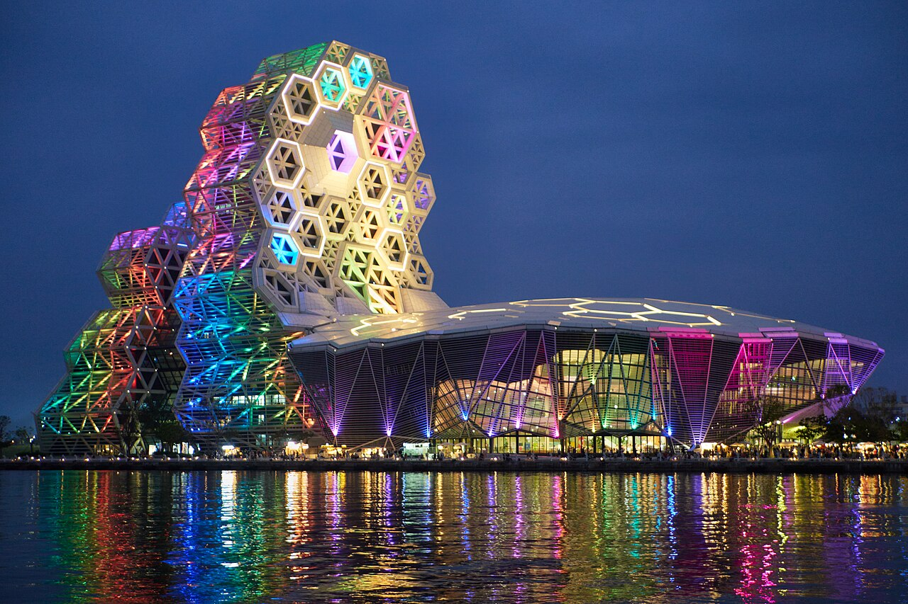

高鐵左營到站・外帶 BTS 同款午餐
中午抵達的 2 人先和高雄地陪會合。搭紅線往小港，在 R10 美麗島站下車，到 老江紅茶牛奶南台總店外帶蛋餅、紅茶牛奶。這是柾國、Jimin、j-hope 在 11/20 去的那一間。想吃飽可再加火腿蛋吐司。
新興區南台路 51 號・買好帶回住家吃。遇到排隊，可由地陪先取餐。
BTS WORLD TOUR ARIRANG
跟著 3J 吃老江，在住家看 MAMA，晚上應援到愛河灣。

中午
中午抵達的 2 人先和高雄地陪會合。搭紅線往小港，在 R10 美麗島站下車，到 老江紅茶牛奶南台總店外帶蛋餅、紅茶牛奶。這是柾國、Jimin、j-hope 在 11/20 去的那一間。想吃飽可再加火腿蛋吐司。
新興區南台路 51 號・買好帶回住家吃。遇到排隊，可由地陪先取餐。
11:30 / 14:00
台灣時間 11:30 星光紅毯、14:00 正式典禮。中午到住家後，邊吃老江邊看。咖啡行程約 15:30 出發，可依想看的舞台調整。
約 15:30
下午茶
看完想看的 MAMA 舞台，再到 程式咖啡工作室 Formula Coffee Roaster。下午抵達的 2 人從左營搭紅線往小港到 R12 後驛站，從 1 號出口走到咖啡館會合。客滿就外帶，接近 17:00 則直接到車站集合。
三民區重慶街 117 號・店家列營業時間 10:00–18:30。店名依田馥甄公開照片的門牌與店面招牌比對。
17:00
五人集合
後驛站 1 號出口地面集合。一起搭紅線往岡山，在 R17 世運站下車，步行到場館外，先拍半月池的 ARIRANG 紅色氣球和入口巡演看板。有人趕不上後驛集合，就到世運站後聯絡地陪會合。
19:00
在現場允許停留的公共區域聽漏音，音量視位置與現場狀況而定。和地陪先約好走散後的集合點，並保持通道暢通。
20:30–21:00
20:30 離開較有機會趕上水舞。依現場指引進 R17 世運站，搭紅線往小港到 R9 中央公園站，再步行約 20 分鐘至 鯨魚堤岸 5 號。步行時間為估計，進站排隊另計。21:00 才離開時，直接以港灣點燈為目標。
21:30
末場
免費觀賞。每半小時一場，每場約 10 分鐘，今晚末場 21:30 開始。抵達後可沿步道，就近合拍水舞與紫色高流夜景。
21:45–22:30
約
在鯨魚堤岸先拍 高雄流行音樂中心，再沿港邊往 高雄港旅運中心走，從高雄展覽館或星光水岸一帶找角度拍 85 大樓 ARMY 投影。錯過水舞可直接走這段，拍完就回住宿。
若想拍大港橋，留作港邊有餘裕時的加碼。想維持 23:00 回住宿，可只拍高流和 85 大樓。
23:00 左右
約 22:30 結束港邊拍照，依地陪提供的住宿定位返回。五人若搭車，叫可載 5 位乘客的車或分兩台。
12:00
建議
五人午餐，吃完行程結束。店在 美麗島站 1 號出口旁，新興區中山橫路 7 號。週日 11:00 起營業，五人桌尚未訂位。
餐後若要回高鐵左營，從 R10 美麗島站搭紅線往岡山至 R16 左營站。